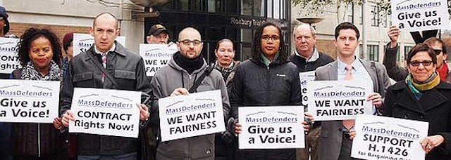

2018-02-20 08:00

“You have the right to remain silent. Anything you say can and will be used against you in a court of law. You have the right to an attorney. If you cannot afford one, one will be appointed to you by the court…” — Miranda warning
Everyone’s heard the Miranda warning and the promise of public counsel. But few know how precarious the system is, how overworked public defenders are, or that the funding of public defenders is really just an afterthought — in even the most liberal of states.
In Massachusetts the Committee for Public Counsel Services (CPCS) provides legal representation to indigent people in criminal and civil cases and administrative proceedings in which there is a right to counsel. CPCS attorneys, social service advocates, investigators, secretaries and other professionals, also known as MassDefenders, work on behalf of poor people on criminal, juvenile, child and family, mental health and other civil commitment cases.
MassDefenders work hard for the most disadvantaged people in the Commonwealth. But CPCS staff have been working for years without a voice in the terms and conditions of their employment. Although public defenders receive some of the benefits provided other state employees (pensions and healthcare), they do not currently have the right to collective bargaining.
In 2004 the Supreme Judicial Court addressed a shortage of lawyers due to stagnant rates of compensation that hadn’t changed since 1986, noting the rates were “among the lowest in the nation.” Today there are signs that Massachusetts is again approaching another crisis.
On Monday, March 6th, starting with an early morning rally outside Superior Court in Fall River (186 S. Main St.) at 8:15am, Massachusetts public defenders will again demand their collective bargaining rights.
Later in the day, at 4:30pm, MassDefenders will attend a public hearing at Superior Court in Taunton (9 Court St.) organized by CPCS management to hear from the public on rate increases for bar advocates and other appointed lawyers. Like CPCS lawyers, bar advocates are attorneys contracted to represent poor people and do similar work as public defenders.
Public defenders and bar advocates are often the first to hear about injustices visited upon those in county and state prisons. Strengthening public defenders’ rights strengthens opposition to prison abuses, mass incarceration, solitary confinement and the systemic racism in the “justice” system. Defenders with the protections collective bargaining confers can also be powerful advocates for the lawful and humane treatment of people detained in immigration cases.
Defend the defenders.
For more information contact Ben Evans at ben.c.evans@gmail.com or at 401-258-4239.